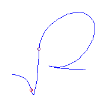
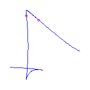
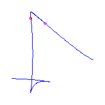
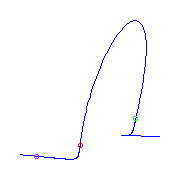
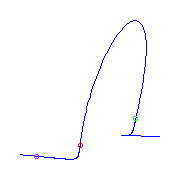
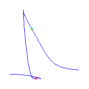
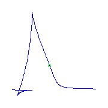
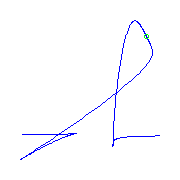
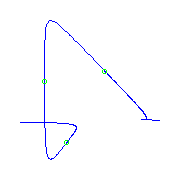

Previous: 5.12 Quintics With a Flat Flex
Next: 5.14 Quintics With a Box Point
Up: 5. Maximally Inflected
Quintics
5.13 Maximally Inflected Quintics with a claw
This page is under construction.
I do not know when or if it will be completed.
This file displays maximally inflected quintics with a claw, which is a
point of ramification of order 3.
The intent is to display one example of all such curves, but there a quite a
few of these curves, because there are many possibilities for the
remaining ramification, and for its placement.
The table below summarizes the possible types of ramification that can occur
in such a curve, and our symbol for each type.
The linked indices are to the spot in this file where curves with at most
that ramification are displayed.
| Name | Index | Partition
| Germ | Symbol |
| Flex | (0,1,3) | 1 |
(s,s3) |
Red Circle |
| Cusp | (0,2,3 | 11 |
(s2,s3) |
|
| Planar | (0,1,4) | 2 |
(s,s4) |
Green Circle |
| Claw | (0,2,4) | 21 |
(s2,s4)
| |
| Flat Flex | (0,1,5) | 3 |
(s,s5) |
Magenta Circle |
| Box | (0,3,4) | 22 |
(s3,s4) | |
| Beak | (0,2,5) | 31 |
(s2,s5) | |
| | (0,3,5) | 32 |
(s3,s5) |
Maroon Circle |
|
|
Pictures of these germs are found here.
There is a unique curve (up to reparameterization) with a ramification point
of type (0,3,5), a claw, and a flex

Additional ramification of type (0,2,5), a beak.
If we have a beak as well as a claw, then there can be one additional
ramification of multiplicity two, either a cusp (on the left), or a
planar point (on the right).
 There can also be two flexes.
For any choice of two flexes, there will be two curves.
The two flexes can either be adjacent
There can also be two flexes.
For any choice of two flexes, there will be two curves.
The two flexes can either be adjacent
 or they are not adjacent
or they are not adjacent


Additional ramification of type (0,3,4), a box
point.
I have yet to draw these pictures.
Additional ramification of type (0,1,5), a flat
flex.
There is a unique curve with two claws and one flat
flex.
 If we have one claw and one flat flex, and a cusp,
then there will be a flex, and there is a unique curve
for each placement of the ramification.
The flex either is between the cusp and the
flat flex, or between the flat
flex and the claw, or between the claw and the cusp.
We display these three possibilities from left to right.

If we have one claw and one flat flex, and a cusp,
then there will be a flex, and there is a unique curve
for each placement of the ramification.
The flex either is between the cusp and the
flat flex, or between the flat
flex and the claw, or between the claw and the cusp.
We display these three possibilities from left to right.


 We may have a planar point instead of the cusp,
again there is a unique curve for each placement of the ramification
and the flex either is between the
planar point and the flat
flex, or between the flat flex and the claw,
or between the claw and the planar point.
We display these three possibilities from left to right.

We may have a planar point instead of the cusp,
again there is a unique curve for each placement of the ramification
and the flex either is between the
planar point and the flat
flex, or between the flat flex and the claw,
or between the claw and the planar point.
We display these three possibilities from left to right.


 If we just have three flexes with the claw and the
flat flex, then either the flexes are connsecutive
(two pictures on the left), or they are not (the two pictures on the right).
For each placement of this ramification, there will be two curves.
If we just have three flexes with the claw and the
flat flex, then either the flexes are connsecutive
(two pictures on the left), or they are not (the two pictures on the right).
For each placement of this ramification, there will be two curves.


Additional ramification of type (0,2,4), a claw.
There are two curves (identical save for reversing their parameterization)
with three claws, we display one.
There is a unique curve with two claws and one flat
flex.
If we have two claws and a cusp, then there will be a
flex.
For each choice of such ramification, there will be three curves.
The flex either is between the claws
or it is not.
Similarly, if we have two claws and a planar
point, then there will be a flex.
For each choice of such ramification, there will be three curves.
The flex either is between the claws

or it is not.
Lastly, we can have three flexex with two claws.
For each choice of this ramification, there will be six curves.
The flexes are either non-consecutive
or they are consecutive.
The first of these curves is very symmetrical, and we show two views of it.

Additional ramification only cusps and planar
points.
If the additional ramification consists only of cusps and
planar points, then we have a total of three
additional points.
For each choice of additional ramification, there will be two curves.
The curves we draw have ramification points at 0, infinity, 1, and -1, so
for symmetrical choices of ramification, the second curve will have the same
image as the first, only with parameterization reversed.
That is the case if there are three cusps,
and if there are two cusps and one planar point
which lies between the cusps.
However, the two curves are different if the cusps are adjacent.


Similarly, if there is one cusp and two
planar points, the curves are different if the
planar points are adjacent
but have identical image if the cusp lies between the two
planar points.
Lastly, the curves have identical image if they come from three
planar points.

There remain many more curves to draw.
Previous: 5.12 Quintics With a Flat Flex
Next: 5.14 Quintics With a Box Point
Up: 5. Maximally Inflected